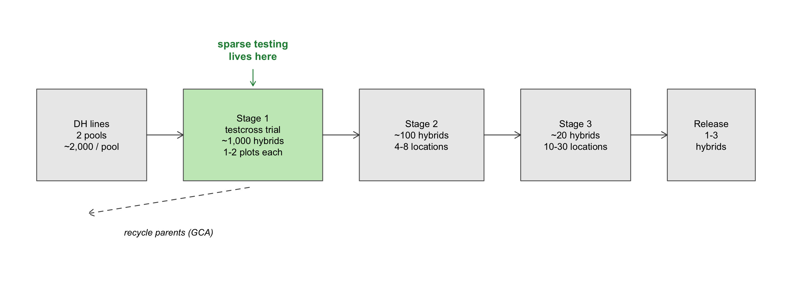
10 Sparse testing: which hybrids go to which locations
A hybrid programme’s first field stage concentrates most of its selection pressure where it has the least information. It typically has thousands of testcrosses, seed for one or two plots of each, a handful of locations, and almost no replication. The previous chapter (Chapter 9) asked which crosses to make from two pools. This one asks the next question: given the crosses, which locations should each one be planted in?
Sparse testing is the answer the literature has converged on. Not every hybrid is grown at every location. Different subsets go to different environments, and the missing hybrid x environment cells are predicted, not discarded, with a relationship matrix connecting what the field left unconnected. In Chapter 9 the sparsity was in the female x male grid. Here it is in the hybrid x environment grid. Real programmes face both at once, the joint problem Section 9.9 lists as its second gap.
The chapter covers the quantitative basis, the history and a taxonomy of the designs, the validation schemes used to judge them, and the empirical record across crops, including its main controversy. It then measures the question with a simulation that the primary literature had not run. The results it defends:
- At a fixed number of plots, spreading them over more locations beats concentrating them. Spreading two plots per hybrid over ten locations instead of two raises accuracy by 0.06 to 0.09, with no extra plots.
- The choice among sparse layouts matters little, except at extreme sparsity. At that point, a layout that puts both pools in every location helps the hybrids that were never tested.
- What connects a sparse trial is parent coverage, not shared hybrids. With a relationship matrix in the model, the best layouts share no hybrid between some location pairs. This suggests one way to reconcile the contradictory published advice on overlap between environments.
- Prediction survives sparsity better than estimation. The BLUP stays undispersed down to one location per hybrid. Variance components stop being reportable earlier, and the SCA variance is biased upward even in the complete design.
NoteWhere the numbers come from
There are three sources, kept apart throughout.
- Live results are computed at render time with
R/17_sparse_testing.R:- allocation generators;
- connectivity diagnostics;
- a base-R mixed-model solve with known variance components, checked against a literal GLS oracle (
ref_sparse_blup()).
- Cached results come from a separate study and are not reproducible from this repository. That study estimated components by REML with
sommeron 2,630 fits, ran a two-stage scenario, and added an AlphaSimR genomic layer. Its tables are inbook/data/sparse_*.csv. - In-repo results come from
Rscript book/scripts/regenerate.R sparse, which reruns the phenotypic core with known components (sparse_core_sweep.csv). That sweep also adds an experiment the cached study did not run (Section 10.6). The two are compared in
The literature numbers are from six primary papers: Li et al. (2026), Atanda et al. (2022), Werner, Covarrubias-Pazaran, et al. (2025), Lubanga et al. (2025), González-Diéguez et al. (2026) and Hild Aono and Chawade (2026). Each one was read in full. Werner, Covarrubias-Pazaran, et al. (2025) is a preprint that has not been peer reviewed.
10.1 The allocation problem of stage 1
10.1.1 The economics of the first stage
Stage 1 is where a plot costs least and a decision is worth most. In CGIAR programmes most of the selection pressure is applied on a few research stations, often as visual selection in unreplicated nurseries (Werner, Covarrubias-Pazaran, et al. 2025; Atlin and Econopouly 2022). Two shifts have changed this stage:
- Genotyping is no longer the bottleneck. Phenotyping is. The cost of a marker has fallen steadily for two decades, while the cost of a yield plot has not (Lorenz 2013).
- Doubled haploids reversed the constraint. A programme now makes more candidates than it can evaluate (C. F. H. Longin et al. 2006). Allocating plots, not creating variation, has become the limiting factor.
What is left is the classical trade-off. More genotypes at fewer locations buys selection intensity and costs accuracy. Fewer genotypes at more locations does the opposite. At stage 1 the scarce resource is the plot, so the question is not how much to test but how to spread what can already be tested (Li et al. 2026).
10.1.2 The breeder’s equation as the decision criterion
The gain per unit time,
\[ \Delta G_t = \frac{i \, r \, \sigma_A}{t}, \]
has four terms. A trial design moves at least three of them together:
- intensity \(i\), through the number of candidates;
- accuracy \(r\), through plots, locations, and how well the locations sample the target population of environments (TPE);
- cycle length \(t\), when parents can be recycled from stage 1.
What a gain measured on a research station is worth depends on the genetic correlation between the selection environment and the TPE (Atlin et al. 2000, 2001). No design is better in the abstract. A design is better according to whichever term limits that programme (Werner, Zaman-Allah, et al. 2025; Riedelsheimer and Melchinger 2013).
TipBox 1 – Where each term of the breeder’s equation meets the trial design
| Term | Design decision that moves it |
|---|---|
| \(i\) (intensity) | number of candidates tested at a fixed plot budget |
| \(r\) (accuracy) | plots per candidate, locations per candidate, use of a relationship matrix |
| \(r\) (relevance) | how well the chosen locations sample the TPE |
| \(\sigma_A\) | indirectly: which parents are recycled, and how related they are (Chapter 17) |
| \(t\) | whether stage-1 GCA predictions are good enough to recycle parents immediately |
10.2 Foundations
10.2.1 The hybrid model: GCA, SCA, and what sparsity threatens
The value of the single cross between female \(i\) and male \(j\) splits as
\[ g_{ij} = \mathrm{GCA}^f_i + \mathrm{GCA}^m_j + \mathrm{SCA}_{ij} \]
(Sprague and Tatum 1942). Section 12.10 derives this split from allele frequencies. Its consequence for this chapter is that a line’s GCA includes dominance effects weighted by the opposite pool’s frequencies. A GCA is therefore specific to the tester pool, not a property of the line alone (González-Diéguez et al. 2021; Legarra et al. 2023). The ratio \(\sigma^2_{SCA}/\sigma^2_{GCA}\) is a design parameter. It grows with the mean degree of dominance and with how close the pools are. In simulated maize it was 0.05, 0.23 and 0.50 for mean dominance degrees of 0.1, 0.5 and 0.9 (González-Diéguez et al. 2026).
GCA survives sparsity better than SCA because it is mostly additive and more stable across environments. Li et al. (2026) recovered GCA from a prediction-completed 50 % trial with correlations of 0.94 to 0.97 against the complete data. Over the same scenarios, phenotypic prediction accuracy was 0.43 to 0.59. What stage 1 needs to estimate is GCA, and GCA is the part of the model most robust to missing cells. That is the underlying reason sparse testing works in hybrids.
TipQuick glossary
- GCA: a line’s average performance in crosses with the opposite pool.
- SCA: the deviation of a particular cross from the sum of its parents’ GCAs.
- Mid-parent heterosis: the hybrid’s advantage over the mean of its parents (Chapter 12).
- Heterotic pool: a group of lines bred to cross well with another group.
- Tester: a line of the opposite pool used to evaluate candidates.
- TPE: the target population of environments the product is sold into.
10.2.2 Hybrid relationship matrices
With female and male relationship matrices \(\mathbf{A}_f\) and \(\mathbf{A}_m\), the three hybrid terms are distributed as
\[ \mathrm{GCA}^f \sim N(\mathbf 0, \mathbf A_f\sigma^2_{f}), \quad \mathrm{GCA}^m \sim N(\mathbf 0, \mathbf A_m\sigma^2_{m}), \quad \mathrm{SCA} \sim N(\mathbf 0, (\mathbf A_f\otimes\mathbf A_m)\sigma^2_{s}) \]
(Bernardo 1994, 1996; Technow et al. 2012). The practical point is that the hybrid itself never needs genotyping: its covariance is a Kronecker product of the parental matrices. Replacing pedigree \(\mathbf A\) by marker \(\mathbf G\) (VanRaden 2008) gives the genomic version (2). There are two ways to write the additive and dominance effects: the “biological” form and the “statistical” form, which is orthogonal at the population’s frequencies. Pool-specific marker effects are a third option (Vitezica et al. 2013; González-Diéguez et al. 2021). All of them lead to the same covariance structure.
The relationship matrix is what makes a sparse design analysable. It is the only link between cells that the field did not link. A hybrid with no plot gets a BLUP only because its parents are related to parents that do have plots. Without it, a sparse design yields comparisons that are not fair.
10.2.3 Multi-environment trials and mixed models
How many parameters the between-environment covariance spends ranges widely:
- identity, diagonal, or compound symmetry;
- heterogeneous AR(1);
- unstructured;
- factor-analytic (Smith et al. 2001; Smith et al. 2005; Kelly et al. 2007; Smith and Cullis 2018).
Factor-analytic models carry most of the information of the unstructured matrix at a fraction of its parameters, and extend directly to genomic relationships (Oakey et al. 2016; Tolhurst et al. 2019; Burgueño et al. 2012). Reaction-norm and marker x environment models are cheaper alternatives (Jarquin et al. 2013; Lopez-Cruz et al. 2015). Only crossover G x E changes selection decisions. A scale effect does not.
In a sparse design the between-environment covariance stops being a statistical detail and becomes part of the design. It decides how much one environment can tell us about another. Two-stage analyses that carry the first-stage error forward are now as efficient as one-stage ones (Piepho et al. 2012; Endelman 2023). Unreplicated trials still need spatial correction and checks (Robbins et al. 2012; Cullis et al. 2006).
TipBox 2 – Which heritability to report in a sparse trial
| Quantity | Formula | What it answers | Behaviour under sparsity |
|---|---|---|---|
| Plot-level \(h^2\) | \(\sigma^2_G / (\sigma^2_G + \sigma^2_{GE} + \sigma^2_e)\) | how informative one plot is | design-independent; it is what the simulations below fix |
| Entry-mean \(H^2\) | \(\sigma^2_G / (\sigma^2_G + \sigma^2_{GE}/L + \sigma^2_e/(rL))\) | how informative an entry mean is, if every entry had \(L\) locations and \(r\) reps | undefined when entries have different \(L\), i.e. in every sparse design |
| Generalised (Cullis) \(H^2\) | \(1 - \overline{\mathrm{PEV}} / (2\sigma^2_G)\) for pairwise differences (Cullis et al. 2006; Piepho and Mohring 2007) | how well the analysed design ranks entries | the right one: it uses the actual PEVs |
The entry-mean formula silently assumes balance. In a sparse trial, report Cullis’.
10.3 What sparse testing is, and where it came from
10.3.1 Definition and genealogy
Definition. A trial is sparse when not every genotype is evaluated in every environment and the missing cells are predicted rather than discarded. The idea developed in four steps:
- Incomplete blocks and lattices. These already accepted partial evaluation within a location.
- Partially replicated designs (p-rep) and augmented p-rep. These replaced replication of each entry with replicated checks and partial replication (Cullis et al. 2006; Williams et al. 2011).
- The genomic relationship replacing replication (Endelman et al. 2014). With markers, the replicated unit is no longer the genotype but the haplotype, shared among relatives.
- Genomic sparse testing across environments, formalised (Jarquin et al. 2020). The design was later framed explicitly as a balanced incomplete block design in which the block is the environment (Montesinos-López et al. 2023).
Farm-as-incomplete-block is the limiting case. Each farmer’s field is an incomplete block holding a handful of entries, and the TPE is sampled through hundreds of them (Werner, Zaman-Allah, et al. 2025; Werner, Covarrubias-Pazaran, et al. 2025; Atlin et al. 2001).
Sparse testing is not a new method. It is incomplete-block design applied at the scale of many environments, made workable by genomic relationships acting as the connecting mechanism. The classical theory of incomplete blocks therefore carries over.
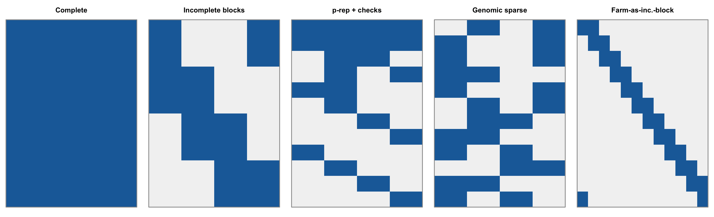
10.3.2 A taxonomy of sparse designs
The designs can be classified along three independent axes.
Axis of sparsity.
- Environments: the classical case.
- Testers: sparse testcrossing (Section 10.8).
- Female x male combinations: the incomplete factorials of Section 9.4.
- Any combination of these.
Overlap structure.
- full overlap, with a common core in every environment;
- no overlap;
- partial overlap, with a fixed core plus entries unique to each environment;
- unrestricted random allocation;
- restricted random allocation, for example keeping full-sibs out of the same location (Werner, Covarrubias-Pazaran, et al. 2025);
- allocation optimised against a formal criterion (Isidro y Sanchez and Akdemir 2021; Fernandez-Gonzalez et al. 2023).
Replicated unit. Genotype, family, or haplotype.
set.seed(5)
core6 <- function(n_core) { # a common core + unique entries
M <- matrix(0L, 32, 6); M[seq_len(n_core), ] <- 1L
rest <- setdiff(1:32, seq_len(n_core))
M[cbind(rest, rep_len(1:6, length(rest)))] <- 1L; M
}
tax <- list("Complete" = sparse_alloc(8, 4, 6, strategy = "complete"),
"Full overlap core" = { M <- matrix(0L, 32, 6); M[1:10, ] <- 1L; M },
"Core + unique" = core6(5),
"No overlap" = core6(0),
"Random, k = 2" = sparse_alloc(8, 4, 6, 2, "random"),
"Parentage, k = 2" = sparse_alloc(8, 4, 6, 2, "parentage"))
op <- par(mfrow = c(1, 6), mar = c(1, 0.5, 2.2, 0.5))
for (nm in names(tax)) {
image(t(tax[[nm]][32:1, ]), col = c("grey95", "#1b6ca8"), zlim = c(0, 1), axes = FALSE,
main = sprintf("%s\n(%d plots)", nm, sum(tax[[nm]])), cex.main = 0.8)
box(col = "grey60")
}
par(op)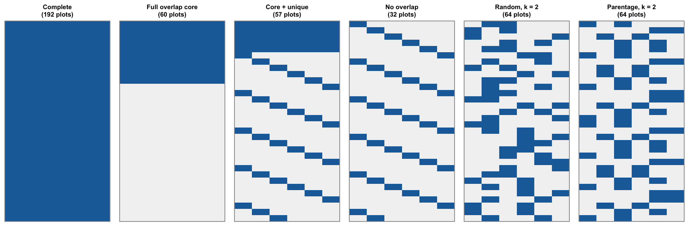
sparse_alloc(). ‘Parentage’ puts every female and every male in every location.
| Design | Sparsity axis | Overlap | Example | Reference |
|---|---|---|---|---|
| Full overlap (common core only) | environments | full | Li et al. “CV1” allocation | Li et al. (2026) |
| Random cells, \(\ge 1\) per genotype | environments | random | Li et al. “CV2”; Jarquin’s allocation schemes | Li et al. (2026); Jarquin et al. (2020) |
| Balanced by genotype (one environment each) | environments | none | Li et al. “CV3”; Lubanga NOL | Li et al. (2026); Lubanga et al. (2025) |
| Core + unique entries | environments | partial | Li et al. “CV5”; Atanda overlap series | Li et al. (2026); Atanda et al. (2022) |
| Restricted random, full-sibs apart | environments | random | farm-as-incomplete-block | Werner, Covarrubias-Pazaran, et al. (2025) |
| One tester per line, sibs across testers | testers | none at line level | sparse testcrossing | González-Diéguez et al. (2026) |
| Incomplete factorial | female x male | partial | sparse factorials | Seye et al. (2020); Lorenzi et al. (2022) |
WarningA naming collision to watch for
Li et al. (2026) use “CV1” to “CV5” as names of allocation strategies, not of the classical validation schemes of Section 10.4. Their “CV1” is the full-overlap design. It is not the “new genotype” validation of Burgueño et al. (2012). Reading the two literatures together without noticing this produces wrong comparisons.
10.4 Validation schemes: what each one answers
The classical schemes are defined by two questions. Has the genotype been observed anywhere? Has the environment been observed for anyone? (Burgueño et al. 2012; Jarquin et al. 2020)
- CV2: the genotype is observed in some environments and missing in others. The task is to complete the table.
- CV1: the genotype is new, never observed anywhere. The task is to predict an unseen candidate.
- CV0: the environment is new (next year, say) and the genotypes are known. The task is to extrapolate to an untested environment.
- CV00: both the genotype and the environment are new. This is the hardest case, and the most realistic for long-run decisions.
CV2 will always look better than CV1. Comparing accuracies across papers that use different schemes is therefore a common and serious error (Li et al. 2026; Nguyen et al. 2023). The correlation is not the only metric:
- top-\(x\) % coincidence: top 20 % by a Smith-Hazel index in Atanda et al. (2022), top 50 % in Li et al. (2026);
- mean squared error (Lubanga et al. 2025);
- Kendall’s \(\tau\) (Hild Aono and Chawade 2026);
- PEV and reliability, and the dispersion slope \(b_1\) of truth on prediction.
At stage 1 the operationally relevant number is the rate of wrongly discarded superior candidates. The correlation is only a proxy for it.
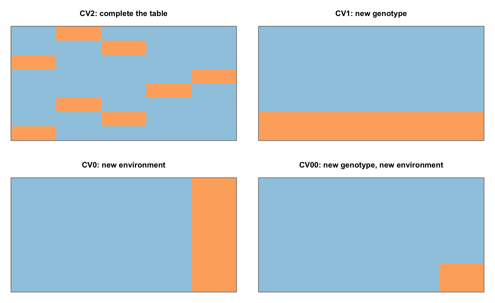
TipBox 3 – CV0, CV1, CV2 and CV00
| Environment observed | Environment new | |
|---|---|---|
| Genotype observed | CV2: fill a missing cell. “How does hybrid H do at location L, where it was not planted?” | CV0: “How will the known hybrids do next year?” |
| Genotype new | CV1: “How good is a hybrid that was never planted?” In this chapter’s simulation, 20 % of hybrids per replicate | CV00: “How good will an untested hybrid be next year?” |
In the simulation below, acc_cv1 and acc_cv2 are measured exactly in this sense.
10.5 The empirical record across crops
Table 10.2 puts the six primary studies side by side. There are two maize studies, one of which is a simulation of reciprocal recurrent selection. The others cover wheat, cassava and potato, and one simulates a self-pollinated crop. Supporting studies cover wheat (Crespo-Herrera et al. 2021; Sukumaran et al. 2018), sugarcane (Garcia-Abadillo et al. 2024), soybean (Persa et al. 2023), tropical maize (Atanda et al. 2021) and potato (Proma et al. 2026).
knitr::kable(ps[, c("study", "crop", "genotypes", "environments", "observed",
"model", "accuracy", "conclusion")],
col.names = c("Study", "Crop", "Genotypes", "Environments", "Observed",
"Model", "Accuracy", "Conclusion"))| Study | Crop | Genotypes | Environments | Observed | Model | Accuracy | Conclusion |
|---|---|---|---|---|---|---|---|
| Li et al. 2026 | maize | 264 | 6 locations x 1 year | 16.7-83.3% | multi-environment GBLUP (reaction norm best) | 0.418 (full overlap) vs 0.479-0.504 | Diminishing returns past ~50% of cells; full overlap is the worst allocation |
| Atanda et al. 2022 | spring wheat | 280 | 6 selection environments | 16.4-58.9% per environment | GBLUP / PBLUP, XFA G x E, AR1 x AR1 spatial | +42% to +989% from 0 to 50% overlap | Substantial overlap of lines between environments recommended |
| Werner et al. 2025 (preprint) | simulated selfer | 2000 | 1-440 locations | p-rep 0.1 on 2,200 plots | GBLUP with GRM, restricted randomisation | sparse 4.32-4.48 vs conventional 2.84-3.67 | Every sparse scheme beat every conventional one; most of the gain by 5 locations |
| Lubanga et al. 2025 | cassava | 435 | 5 location-years | 10.8-20.0% per environment | reaction norm, E + L + G + G x E | max 0.53 (dry matter) / 0.47 (yield) | More overlap HURT at fixed training size; 20% of records suffice |
| Gonzalez-Dieguez et al. 2026 | maize hybrids, simulated RRS | 1200 per pool | 1-1200 testers | 1 testcross per line | pool-specific additive + dominance RRBLUP | +3/11/23% GCA accuracy with 10 testers (low/mid/high dominance) | Plateau at 5-10 testers; 3-5 recommended |
| Hild Aono & Chawade 2026 | potato | 256 | 3 location-years | 10-66% | BGLR with genomic and image-derived environment kernels | 0.995-0.997 (image kernel) vs 0.612-0.798 (genomic), pairs at 50% | Image kernel wins from ~30% completeness; possible information leakage |
The anchor numbers are as follows.
- Maize (Li et al. 2026). Mean accuracy was 0.418 under full overlap and 0.479 to 0.504 under every other allocation. Returns diminish beyond about 50 % coverage: going from 50 % to 67 % cost 33 % more phenotyping and returned 3.5 to 5.4 % accuracy. Top-50 % coincidence was above 61.9 % in all 25 strategies.
- Wheat (Atanda et al. 2022). Going from 0 to 50 % common lines raised predictive ability by 42 % to 989 %, depending on the environment. Plot \(h^2\) was 0.18 in the worst environment. Genetic correlations between environments in the same year ranged from \(-0.04\) to \(0.67\).
- Cassava (Lubanga et al. 2025). With 20 % of records per environment, predictive ability was moderate (maxima of 0.53 for dry matter and 0.47 for fresh root yield). Phenotyping cost could be cut by up to 80 %.
- Potato (Hild Aono and Chawade 2026). For pairs of environments at 50 % completeness, \(r^2\) was 0.995 to 0.997 with an image-derived environment kernel, against 0.612 to 0.798 with the genomic kernel. Section Section 10.10 covers the caveat.
The common denominator is the genetic correlation between environments, and the size and diversity of the training set. Together they explain most of the spread. In Atanda et al. (2022), the environment with low heritability and weak correlations stayed poorly predicted under every design. In Li et al. (2026), plant height was the trait with the strongest between-environment correlations (0.36 to 0.67) and the best predicted. Grain yield had no strong correlations and was predicted worst. Modelling G x E explicitly helped in every study that tested it (Lubanga et al. 2025; Li et al. 2026). Cutting phenotyping by 50 to 80 % without losing accuracy is feasible. The exact cut depends on the programme’s own between-environment correlations, and does not transfer between programmes.
10.6 The minimum-overlap controversy
The literature disagrees openly on how much overlap is needed:
- Atanda et al. (2022) conclude that “a substantial overlap of lines between environments” is needed.
- Crespo-Herrera et al. (2021) suggest 30 to 50 common lines.
- Persa et al. (2023) report a gain with as few as 10.
- Lubanga et al. (2025) find that more overlap made prediction worse: predictive ability fell and MSE rose monotonically with the number of overlapping genotypes, and the fully non-overlapping design was the best.
- Li et al. (2026) sit in between. Full overlap was the worst design, and the four partial or non-overlapping designs tied.
- Werner, Covarrubias-Pazaran, et al. (2025) and González-Diéguez et al. (2026) do without overlap altogether. All of their connectivity comes from relationships.
A proposed reconciliation, offered here as a hypothesis. The designs are not comparable because they confound overlap with the size and diversity of the training set:
- In Lubanga et al. (2025) the training set per environment is fixed in size. More overlap therefore means fewer distinct genotypes observed.
- In Atanda et al. (2022) more overlap means a larger calibration set per environment, growing from 46-47 lines to as many as 165.
A second factor is family structure. Families of 1 to 9 individuals (Atanda et al. 2022) give the relationship matrix little to work with, so physical overlap has to carry the connection. Families of 20 to 50 (Werner, Covarrubias-Pazaran, et al. 2025; González-Diéguez et al. 2026) let the relationship matrix carry all of it.
The first half of the hypothesis is testable directly with the package. The experiment uses four locations and a training set fixed at 80 hybrids per location out of 400. A fraction of the 80 is a core common to all four locations, and the rest are unique to each location. Family size runs from unrelated lines to half-sib families of 10 (regenerate.R sparse, part c; 30 replicates per point; known components; plot \(h^2 = 0.4\)).
ov <- subset(core, part == "overlap")
fs <- sort(unique(ov$family_size))
cols <- c("grey40", "#1b9e77", "#d95f02")[seq_along(fs)]
op <- par(mar = c(4.2, 4.2, 3.2, 1))
plot(NA, xlim = c(0, 1), ylim = range(ov$acc_all + c(-2, 2) * ov$acc_all_se),
xlab = "Overlap: fraction of each location's plots in the common core",
ylab = "Accuracy, all hybrids")
for (i in seq_along(fs)) {
d <- ov[ov$family_size == fs[i], ]; d <- d[order(d$overlap), ]
lines(d$overlap, d$acc_all, type = "b", pch = 19, col = cols[i])
arrows(d$overlap, d$acc_all - 2 * d$acc_all_se, d$overlap, d$acc_all + 2 * d$acc_all_se,
angle = 90, code = 3, length = 0.03, col = cols[i])
}
d0 <- ov[ov$family_size == fs[1], ]; d0 <- d0[order(d0$overlap), ]
axis(3, at = d0$overlap, labels = d0$n_distinct, cex.axis = 0.8)
mtext("distinct hybrids observed", 3, line = 2, cex = 0.8)
legend("bottomleft", bty = "n", lwd = 2, col = cols,
legend = ifelse(fs == 1, "unrelated lines", paste("half-sib families of", fs)))
par(op)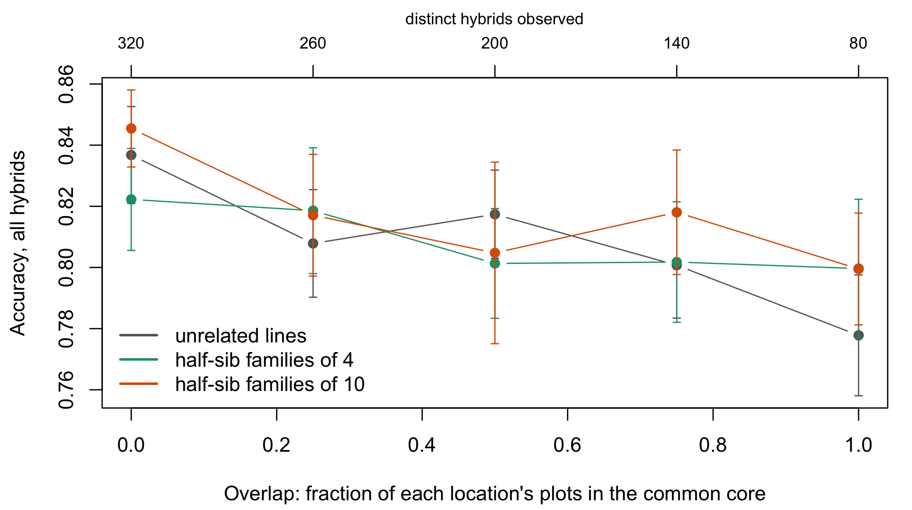
With the training size held fixed, accuracy falls as overlap rises: it is 0.023 to 0.059 lower under full overlap than under none, 1.6 to 4.7 standard errors of the difference depending on family size. The cause is the confound, not overlap as such. Every hybrid moved into the common core is one fewer distinct hybrid observed (top axis). This is the Lubanga et al. (2025) pattern, reproduced with the mechanism exposed.
The second half of the hypothesis is not supported at this scale. The family-size curves cross, and they differ by no more than two standard errors. In hindsight the reason is structural. In a female x male factorial every line is already the parent of 20 hybrids, so the factorial carries much of the connectivity before any relationship among lines is added. Half-sib families add relatively little on top of that. In a line-breeding programme like Atanda et al. (2022), each entry is its own genotype and no parent links them, so family structure should matter far more. This experiment cannot test that case. The experiment also holds the training size fixed, so it does not reproduce Atanda et al. (2022)’s design, in which more overlap also meant a larger calibration set and the two effects pull in opposite directions.
What to do with this. The right question is not “how many common genotypes?”. It is “how much effective connectivity does the design have, counting both physical overlap and relationships?”. Physical overlap and genomic relationships are partial substitutes (Windhausen et al. 2012). In a hybrid factorial, shared parents already supply much of the relationship side.
10.7 Connectivity and checks
Connectivity is not the same as overlap. Two designs with the same number of common genotypes can be connected very differently, depending on how those genotypes are distributed. Hybrids add a dimension. There is female x male connectivity, the subject of Section 9.2.3. There is genotype x location connectivity. And there is female x male x location, for which no metric is agreed. That is an open gap (Section 10.13). The available tools are:
- the rank of the incidence matrix;
- the PEV of pairwise contrasts, and the reliability derived from it;
- the connected components of the genotype-environment graph.
Checks do three jobs:
- anchor connectivity;
- estimate within-environment error in unreplicated trials, as in the augmented design of Li et al. (2026);
- control spatial trend (Cullis et al. 2006; Williams et al. 2011).
Restricted randomisation is a cheap connectivity tool. Werner, Covarrubias-Pazaran, et al. (2025) kept full-sibs apart within a location, but did not measure the restriction against unrestricted randomisation. Section 10.11.3 does measure a structured layout against unrestricted randomisation.
Connectivity can be checked before planting. Compute it at the planning stage, rather than finding out from a model that does not converge.
TipBox 4 – Computing the connectivity of a design before planting it
- Build the genotype x environment incidence matrix.
- Check the connected components of the bipartite graph. Every location should share hybrids, or at least parents, with every other.
- Compute the mean PEV of the target values under the intended model, with provisional variance components.
- Convert it to reliability, \(1 - \overline{\mathrm{PEV}}/\sigma^2_G\).
- Compare candidate designs on the same metric.
set.seed(8)
nF <- 20; nM <- 20; L <- 6
Af <- relmat_halfsib(nF, 5); Am <- relmat_halfsib(nM, 5)
vc <- sparse_vc(0.3)
recipe <- function(M) {
cn <- sparse_connectivity(M, nF, nM) # steps 1-2
# PEV does not depend on y, so any phenotype vector will do (steps 3-4).
cells <- which(M == 1L, arr.ind = TRUE)
ph <- data.frame(y = 0, hyb = cells[, 1], loc = cells[, 2])
pev <- sparse_blup(ph, nF, nM, L, vc, Af, Am)$pev
c(plots = sum(M), fem_cover = cn$fem_cover, disconnected_pairs = cn$frac_disconn,
reliability = 1 - mean(pev) / vc$Vg)
}
fmt(rbind(complete_2loc = recipe(sparse_alloc(nF, nM, 2, strategy = "complete")),
random_k2 = recipe(sparse_alloc(nF, nM, L, 2, "random")),
parentage_k2 = recipe(sparse_alloc(nF, nM, L, 2, "parentage"))), 3)| plots | fem_cover | disconnected_pairs | reliability | |
|---|---|---|---|---|
| complete_2loc | 800 | 1 | 0 | 0.625 |
| random_k2 | 800 | 1 | 0 | 0.703 |
| parentage_k2 | 800 | 1 | 0 | 0.705 |
All three designs cost 800 plots. Spreading them over six locations raises reliability before a single plot is sown. The PEV depends only on the design and the components, not on the data. That makes it a design tool and not only an evaluation metric.
10.8 Sparse testcrossing and the number of testers
The central idea of González-Diéguez et al. (2026) is to treat the tester as an “environment”. Each line is crossed to one tester, but full-sibs go to different testers. What gets evaluated against several testers is therefore the haplotype, not the genotype. This removes a real logistical constraint. The more accurate alternative, an incomplete factorial among candidates (Section 9.4), needs hand pollination at scale and synchronised flowering between pools.
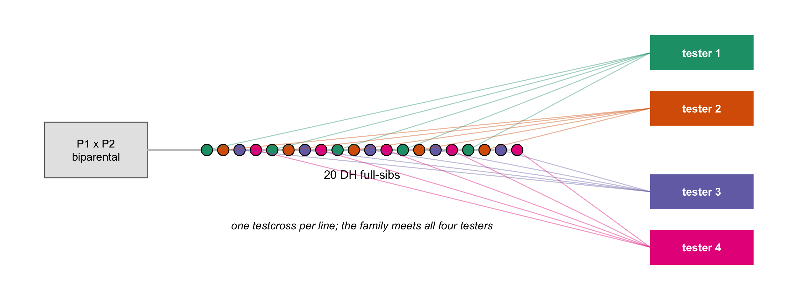
| Testers (1,200 testcrosses per pool) | Gain in GCA accuracy over 1 tester | Gain in hybrid genetic gain, cycle 15 |
|---|---|---|
| 2, medium dominance | +5.3 % | – |
| 10, low / medium / high dominance | +3 % / +11 % / +23 % | +3 % / +6 % / +11 % |
| 2 to 10, medium dominance | +0.7 % on top of the 2-tester gain | – |
The advantage is largest in early cycles, while the pools are still close. That does not confine the method to emerging programmes. Real commercial pools sit at a minimum Nei distance of 0.17 (Legarra et al. 2023) and an \(F_{ST}\) of 0.223 (Kadoumi et al. 2025), which corresponds to cycles 2 to 4 of the simulation.
A useful side effect is that sparse testcrossing slowed the erosion of within-pool variance. It stops selection from piling onto closely related lines that happen to nick with one tester. The authors recommend combining it with optimum contribution selection (Chapter 17; Santantonio and Robbins (2020)).
The deterministic tradition reaches the same order of magnitude by another route (C. Longin et al. 2006). The advocates of incomplete factorials (Seye et al. 2020; Lorenzi et al. 2022; Lorenzi et al. 2024; Melchinger and Frisch 2023) reach a different conclusion. In González-Diéguez et al. (2026), an approximate incomplete factorial matched 3 to 5 testers, with much heavier logistics. Two costs were not modelled. Five testers need ten isolation blocks. And in many public programmes hand pollination is already routine, which lowers the extra cost of the factorial.
TipBox 5 – Choosing testers: theory against practice
The classical recommendation is a low-performing tester, or one carrying recessive alleles at the loci of interest. Such a tester discriminates among candidates best (Hull 1945; Rawlings and Thompson 1962). Commercial practice uses elite testers, chosen for seed production and per se performance, because the testcross may itself become a product. The consequence follows from Section 12.10: GCA is measured against the tester’s allele frequencies. An elite tester carries the favourable allele at many loci and shrinks the visible differences there, so a few elite testers sample the opposite pool’s frequencies poorly. Several testers spread across the pool, the sparse-testcross recipe, sample them better (C. Longin et al. 2006; Jong et al. 2023).
10.9 What sparsity does to variance components and to the BLUP
Two questions are often merged in the literature, and they should be kept separate:
- Do the predictions stay accurate?
- Do the variance-component estimates stay unbiased?
The second is barely covered. None of the six primary studies reports bias in \(\sigma^2_{GCA}\), \(\sigma^2_{SCA}\) or \(\sigma^2_{GE}\) under sparsity. The indirect evidence is thin:
- In Hild Aono and Chawade (2026) the G x E term degraded prediction under high sparsity, because there were too few individuals to estimate it. The authors recommend dropping it in that regime.
- In Li et al. (2026) propagating prediction uncertainty barely changed the GCA estimates (correlation 0.9974 to 0.9998 with the point estimates). That is a sensitivity of GCA, not of the variance components.
Two diagnostics separate the questions.
- The dispersion slope \(b_1\), from regressing truth on prediction. \(b_1 = 1\) means no scale bias. \(b_1 < 1\) means the predictions are too spread out, and \(b_1 > 1\) means they are over-shrunk.
- PEV and reliability. These can be computed before any data exist (Box 4), so they serve as design tools.
Accuracy and estimation quality do not degrade at the same rate. A design can rank candidates well and still estimate the SCA and G x E variances badly (Cullis et al. 2006; Piepho and Mohring 2007; Smith and Cullis 2018; Tolhurst et al. 2019). The simulation of Section 10.11.3 measures this directly. That is the gap in the primary literature it was designed to fill.
10.10 Sparse testing with phenomics
Phenomic data pose a specific problem. Markers can be read from a seedling whatever happens in the field. Sensor data exist only for plots that were actually grown, so they cannot serve as a covariate for an individual that was never observed. There are three ways out:
- multi-trait models with image indices as secondary traits;
- kernel regression on the indices;
- the proposal of Hild Aono and Chawade (2026): use the images to build an environment kernel.
The environment kernel is built in three steps. A PCA of the image traits is run within each environment. The first-component eigenvector of each environment is extracted. The kernel entries are the correlations between those eigenvectors.
The image kernel matched or beat the genomic kernel from about 30 to 33 % completeness, reaching \(r^2 = 0.997\) on pairs of environments. Below about 20 % the genomic kernel was preferable again. The authors warn of possible information leakage, because the kernel came from the same trial that supplied training and validation. The result should be reported with that caveat.
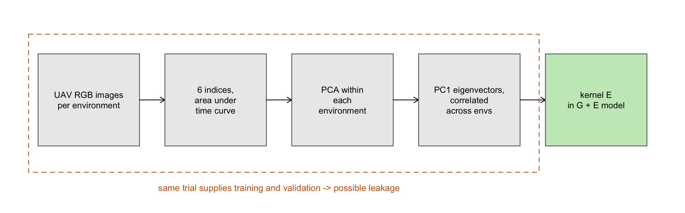
The approach is attractive for programmes without routine genotyping. It is also promising for maize, where sensor phenotyping exists but has not been tested in this arrangement with hybrids. It connects to envirotyping. When locations are close together, coarse-grid weather covariates discriminate poorly, and images capture differences that the weather data miss (Costa-Neto et al. 2020; Crossa et al. 2021; Rincent et al. 2017). NIRS-based phenomic prediction in maize points the same way, in a non-sparse setting (DeSalvio et al. 2024).
Sensor data enter sparse testing as descriptors of environments, not of genotypes. This inversion solves the availability problem. In programmes that genotype little, it can partly replace the genomic matrix.
10.11 Simulation as a sizing tool
10.11.1 Why simulate before designing
None of the published numbers transfers directly to another programme. Each one depends on the between-environment correlations, the family structure, the \(\sigma^2_{SCA}/\sigma^2_{GCA}\) ratio and the heritability of the programme that produced it, and the authors say so themselves (Werner, Covarrubias-Pazaran, et al. 2025; González-Diéguez et al. 2026). A simulation can do three things an experiment cannot:
- it knows the true values;
- it can rerun the programme a hundred times;
- it can isolate one factor at a time.
The tools exist. AlphaSimR covers the genetics , Chapter 7, FieldSimR covers plots and G x E (Werner et al. 2024), and sommer or BGLR fit the models (Covarrubias-Pazaran 2016). Staged-allocation theory provides the deterministic cross-check (Mi et al. 2014; C. F. H. Longin et al. 2006). Simulation does not replace the experiment. It replaces guessing at the design of the experiment.
10.11.2 Realistic parameters: what the literature supplies
knitr::kable(lp[, c("parameter", "value", "source", "derived")],
col.names = c("Parameter", "Value", "Source", "Derived"))| Parameter | Value | Source | Derived |
|---|---|---|---|
| Plot heritability | 0.10 (founder population) | Werner et al. 2025 (simulation) | no |
| Plot heritability (worst environment) | 0.18 | Atanda et al. 2022 (wheat) | no |
| Broad-sense H2 over all hybrids | 0.30 | Gonzalez-Dieguez et al. 2026 (simulation) | no |
| Entry-mean H2 | 0.76-0.87 | Li et al. 2026 (maize) | no |
| Entry-mean H2 | 0.61-0.87 | Lubanga et al. 2025 (cassava) | no |
| Broad-sense H2 (maximum) | ~0.67 | Hild Aono & Chawade 2026 (potato) | no |
| s2SCA / s2GCA at cycle 1 | 0.05 / 0.23 / 0.50 for mean dominance 0.1 / 0.5 / 0.9 | Gonzalez-Dieguez et al. 2026 | no |
| s2GxE / (s2G + s2GxE) | 0.56 | Werner et al. 2025 | no |
| Crossover share of G x E variance | 0.53 | Werner et al. 2025 | no |
| Mean genetic correlation between TPE locations | 0.60 | Werner et al. 2025 | no |
| Genetic correlation between locations (plant height) | 0.36-0.67 | Li et al. 2026 (maize) | no |
| Genetic correlation between environments (grain yield) | none strong detected | Li et al. 2026 (maize) | no |
| Genetic correlation between environments (same year) | -0.04 to 0.67 | Atanda et al. 2022 (wheat) | no |
| s2_env / s2_g (grain yield) | 8.1 | Li et al. 2026 (maize; 1.13 / 0.14) | yes |
| Genotypes tested | 264-2000 | all six studies | no |
| Locations | 2-440 | all six studies | no |
| Testers | 1-1200 | Gonzalez-Dieguez et al. 2026 | no |
| Cells observed | 10-83% | all six studies | no |
Two features of real data a simulation must respect:
- Environmental variance exceeds genetic variance by an order of magnitude. For maize grain yield, \(\sigma^2_{env}/\sigma^2_g \approx 8.1\) (Li et al. 2026).
- Between-environment correlations for yield are often weak. Scenarios should be anchored on measured parameters, not chosen for numerical convenience.
10.11.3 What the simulation finds
The model. The study simulated a female x male factorial of single crosses, tested with one plot per hybrid x location cell. The phenotype is
\[ y = \mu + \text{loc} + \mathrm{GCA}^f + \mathrm{GCA}^m + \mathrm{SCA} + \mathrm{GCA}^f{\times}\text{loc} + \mathrm{GCA}^m{\times}\text{loc} + \mathrm{SCA}{\times}\text{loc} + e . \]
The target is the value in the TPE, \(\mathrm{GCA}^f + \mathrm{GCA}^m + \mathrm{SCA}\). In every replicate, 20 % of the hybrids get no plot at all. These are the CV1 hybrids, predicted only through relationships.
The calibration is sparse_vc():
- \(\sigma^2_f = \sigma^2_m = 1\) and \(\sigma^2_{SCA} = 0.25\);
- every interaction with location is half its main effect;
- plot \(h^2\) of 0.20 or 0.40.
These choices imply a genetic correlation between locations of \(V_G/(V_G+V_{GE}) = 0.667\). That sits inside the 0.36 to 0.67 measured in maize (Li et al. 2026) and close to the 0.60 of Werner, Covarrubias-Pazaran, et al. (2025). The SCA:GCA ratio of 0.25 lies among the values in González-Diéguez et al. (2026), and the two heritabilities bracket Werner, Covarrubias-Pazaran, et al. (2025)’s 0.10 and the 0.30 of González-Diéguez et al. (2026).
The four strategies, all at the same cost of \(k\) locations per hybrid:
- complete;
- random: each hybrid goes to \(k\) locations drawn at random;
- optimised blocks: an exchange algorithm on the mixed-model coefficient matrix, with replicated checks;
- parentage: the factorial is cut into cyclic groups, each holding every female and every male, and groups are dealt to locations so that every location receives both whole pools.
The last is sparse_alloc(strategy = "parentage").
Validation of the estimator. Before any comparison, the estimator was checked on the complete design, where REML must recover the true components (Table 10.5).
v <- val; v$component <- sub("s2", "s2_", v$component)
knitr::kable(fmt(v[, c("h2_plot", "component", "true", "mean_est", "relbias_pct", "se_relbias_pct", "t")], 3),
col.names = c("Plot h2", "Component", "True", "Mean estimate", "Rel. bias %", "SE %", "t"))| Plot h2 | Component | True | Mean estimate | Rel. bias % | SE % | t |
|---|---|---|---|---|---|---|
| 0.2 | s2_f | 1.000 | 1.026 | 2.63 | 7.88 | 0.33 |
| 0.2 | s2_m | 1.000 | 0.964 | -3.57 | 6.70 | -0.53 |
| 0.2 | s2_s | 0.250 | 0.350 | 39.94 | 18.50 | 2.16 |
| 0.2 | s2_fl | 0.500 | 0.540 | 7.97 | 6.13 | 1.30 |
| 0.2 | s2_ml | 0.500 | 0.499 | -0.13 | 6.04 | -0.02 |
| 0.2 | s2_res | 8.000 | 7.962 | -0.48 | 0.53 | -0.90 |
| 0.4 | s2_f | 1.000 | 0.979 | -2.15 | 6.07 | -0.35 |
| 0.4 | s2_m | 1.000 | 1.008 | 0.79 | 6.77 | 0.12 |
| 0.4 | s2_s | 0.250 | 0.303 | 21.31 | 20.91 | 1.02 |
| 0.4 | s2_fl | 0.500 | 0.488 | -2.31 | 3.16 | -0.73 |
| 0.4 | s2_ml | 0.500 | 0.496 | -0.70 | 3.77 | -0.19 |
| 0.4 | s2_res | 2.375 | 2.364 | -0.44 | 0.73 | -0.61 |
Every component except SCA is recovered without detectable bias (\(|t| \le 1.3\)). \(\sigma^2_{SCA}\) is biased upward even here, by +39.9 % and +21.3 %. That is the expected direction for a small component (11 % of \(V_G\)) estimated by a procedure bounded below at zero. The bias is a baseline, not an effect of sparsity. Every later SCA number has to be read against it.
The grid has 2,630 fits:
- 100 and 400 hybrids;
- 2, 4, 6 and 10 locations;
- nominal sparsity from 20 % to 100 %;
- two heritabilities;
- 15 replicates per cell.
10.11.3.1 1. The cutting margin is wide, and wider at higher heritability
op <- par(mfrow = c(1, 2), mar = c(4.2, 4.2, 2, 1))
d <- subset(s4, h2_plot == 0.4 & strategy %in% c("parentage", "complete"))
Ls <- sort(unique(d$nLoc)); lc <- hcl.colors(length(Ls), "Dark 3")
plot(NA, xlim = range(d$n_plots_mean), ylim = range(d$acc_all_mean),
xlab = "Plots", ylab = "Accuracy, all hybrids", main = "Cost-accuracy, h2 = 0.4", cex.main = 0.9)
for (i in seq_along(Ls)) {
e <- d[d$nLoc == Ls[i], ]; e <- e[order(e$n_plots_mean), ]
lines(e$n_plots_mean, e$acc_all_mean, type = "b", pch = ifelse(e$strategy == "complete", 1, 19), col = lc[i])
}
legend("bottomright", bty = "n", col = lc, lwd = 2, legend = paste(Ls, "locations"), cex = 0.8)
sp <- subset(s4, k == 2 & strategy %in% c("complete", "random"))
plot(NA, xlim = c(2, 10), ylim = range(sp$acc_all_mean), xlab = "Locations sharing the 2 plots per hybrid",
ylab = "Accuracy, all hybrids", main = "Same 800 plots, spread wider", cex.main = 0.9)
for (h in c(0.2, 0.4)) {
e <- sp[sp$h2_plot == h, ]; e <- e[order(e$nLoc), ]
lines(e$nLoc, e$acc_all_mean, type = "b", pch = 19, lty = ifelse(h == 0.2, 2, 1))
}
legend("bottomright", bty = "n", lty = c(1, 2), pch = 19, legend = c("plot h2 = 0.4", "plot h2 = 0.2"), cex = 0.8)
par(op)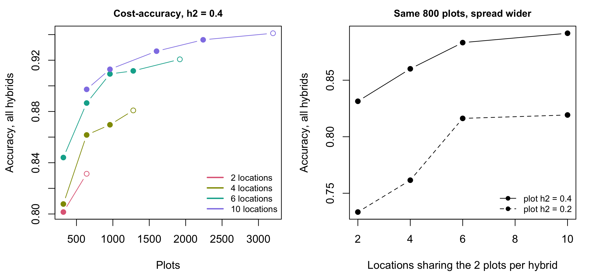
Take 400 hybrids at \(h^2 = 0.4\). The complete design over ten locations (3,200 plots) reaches an accuracy of 0.941. The cheapest allocation within 5 % of that is the parentage design with 2 locations per hybrid. It uses 640 plots, 20 % of the budget, and reaches 0.897, which is 95.3 % of the reference. Coincidence with the true top 5 % falls only from 70.0 % to 65.7 %. At \(h^2 = 0.2\) the requirement roughly doubles to half the cells. Table 10.6 lists every scenario.
m <- mn; m$within <- ifelse(m$minimal_5, "5 %", "10 %")
m <- m[order(m$nHyb, m$h2_plot, m$sca_level, m$nLoc, m$within), ]
knitr::kable(fmt(m[, c("nHyb", "h2_plot", "sca_level", "nLoc", "within", "strategy", "k",
"n_plots_mean", "acc_all_mean", "acc_rel", "cost_rel")], 3),
row.names = FALSE,
col.names = c("Hybrids", "Plot h2", "SCA", "Locations", "Within", "Strategy", "k",
"Plots", "Accuracy", "Rel. accuracy", "Rel. cost"))| Hybrids | Plot h2 | SCA | Locations | Within | Strategy | k | Plots | Accuracy | Rel. accuracy | Rel. cost |
|---|---|---|---|---|---|---|---|---|---|---|
| 100 | 0.2 | low | 4 | 10 % | parentage | 3 | 240.000 | 0.779 | 0.903 | 0.3 |
| 100 | 0.2 | low | 4 | 5 % | complete | 4 | 320.000 | 0.825 | 0.958 | 0.4 |
| 100 | 0.4 | low | 6 | 5 % | random | 4 | 320.000 | 0.887 | 0.951 | 0.4 |
| 100 | 0.4 | low | 10 | 10 % | parentage | 2 | 160.000 | 0.856 | 0.917 | 0.2 |
| 400 | 0.2 | low | 6 | 10 % | random | 2 | 640.000 | 0.816 | 0.904 | 0.2 |
| 400 | 0.2 | low | 10 | 5 % | random | 5 | 1600.000 | 0.874 | 0.967 | 0.5 |
| 400 | 0.4 | high | 10 | 10 % | random | 2 | 640.000 | 0.825 | 0.901 | 0.2 |
| 400 | 0.4 | high | 10 | 5 % | optimised_blocks | 5 | 1599.867 | 0.884 | 0.966 | 0.5 |
| 400 | 0.4 | low | 4 | 10 % | optimised_blocks | 2 | 639.667 | 0.859 | 0.912 | 0.2 |
| 400 | 0.4 | low | 10 | 5 % | parentage | 2 | 640.000 | 0.897 | 0.953 | 0.2 |
10.11.3.2 2. At fixed cost, spreading plots over locations beats concentrating them
This is the most actionable result (Figure 10.8, right). Each hybrid keeps two plots, the cost of a complete two-location trial. At \(h^2 = 0.4\), accuracy rises from 0.831 with both plots in the same two locations to 0.860, 0.883 and 0.892 as those plots are spread across 4, 6 and 10 locations. At \(h^2 = 0.2\) it rises from 0.733 to 0.819. Not one extra plot is spent. The gain saturates between six and ten locations, so the practical advice is to add locations up to about six before adding plots per hybrid. This is the replication-against-breadth trade-off of Lorenz (2013), Atlin and Econopouly (2022) and Werner, Covarrubias-Pazaran, et al. (2025), now measured for hybrids with GCA and SCA.
10.11.3.3 3. Among sparse designs the choice matters little, except at extreme sparsity
cc <- ct[ct$metric %in% c("acc_all", "acc_cv1", "acc_cv2") & ct$subset %in% c("all", "k<=2"), ]
knitr::kable(fmt(cc[, c("layer", "contrast", "metric", "subset", "n", "diff", "se", "p")], 4),
row.names = FALSE,
col.names = c("Layer", "Contrast", "Metric", "Subset", "n", "Difference", "SE", "p"))| Layer | Contrast | Metric | Subset | n | Difference | SE | p |
|---|---|---|---|---|---|---|---|
| fast | parentage - random | acc_all | all | 791 | 0.0051 | 0.0029 | 0.0773 |
| fast | optimised_blocks - random | acc_all | all | 791 | 0.0011 | 0.0028 | 0.7018 |
| fast | parentage - random | acc_cv1 | all | 791 | 0.0086 | 0.0039 | 0.0260 |
| fast | optimised_blocks - random | acc_cv1 | all | 791 | 0.0018 | 0.0043 | 0.6698 |
| fast | parentage - random | acc_cv2 | all | 791 | 0.0077 | 0.0026 | 0.0031 |
| fast | optimised_blocks - random | acc_cv2 | all | 791 | 0.0060 | 0.0023 | 0.0103 |
| genomic | parentage - random | acc_all | all | 32 | 0.0226 | 0.0086 | 0.0137 |
| genomic | optimised_blocks - random | acc_all | all | 32 | 0.0152 | 0.0098 | 0.1296 |
| genomic | parentage - random | acc_cv1 | all | 32 | 0.0139 | 0.0092 | 0.1410 |
| genomic | optimised_blocks - random | acc_cv1 | all | 32 | 0.0111 | 0.0135 | 0.4197 |
| fast | parentage - random | acc_cv1 | k<=2 | 385 | 0.0187 | 0.0069 | 0.0070 |
| fast | optimised_blocks - random | acc_cv1 | k<=2 | 385 | -0.0012 | 0.0079 | 0.8810 |
Over the whole grid, the parentage design beats random allocation on untested hybrids by +0.0086 \(\pm\) 0.0039 (p = 0.026). That is real and small. Restricted to \(k \le 2\) locations per hybrid, the advantage roughly doubles, to +0.0187 \(\pm\) 0.0069 (p = 0.007). The optimised blocks show nothing there (-0.0012 \(\pm\) 0.0079). In the genomic layer, with marker relationships and real dominance, the parentage advantage on overall accuracy is +0.023 \(\pm\) 0.009 (p = 0.014).
None of the six primary studies compared a structured allocation with a random one. Li et al. (2026) found their structured schemes tied with each other. Werner, Covarrubias-Pazaran, et al. (2025) used restricted randomisation without a random control. This result answers that open question for the hybrid case. The structure matters when plots are scarce, and only for the hybrids the field never saw.
a <- aggregate(acc_all ~ strategy + nLoc + p_real, gl, mean)
op <- par(mar = c(4.2, 4.2, 1, 1))
plot(NA, xlim = range(a$p_real), ylim = range(a$acc_all), xlab = "Share of cells observed",
ylab = "Accuracy, all hybrids")
for (s in names(strat_col)) for (L in unique(a$nLoc)) {
e <- a[a$strategy == s & a$nLoc == L, ]; e <- e[order(e$p_real), ]
if (nrow(e)) lines(e$p_real, e$acc_all, type = "b", pch = ifelse(L == 4, 19, 17),
lty = ifelse(L == 4, 1, 2), col = strat_col[s])
}
legend("bottomright", bty = "n", cex = 0.8, col = c(strat_col, "black", "black"),
lty = c(1, 1, 1, 1, 1, 2), pch = c(NA, NA, NA, NA, 19, 17),
legend = c(names(strat_col), "4 locations", "8 locations"))
par(op)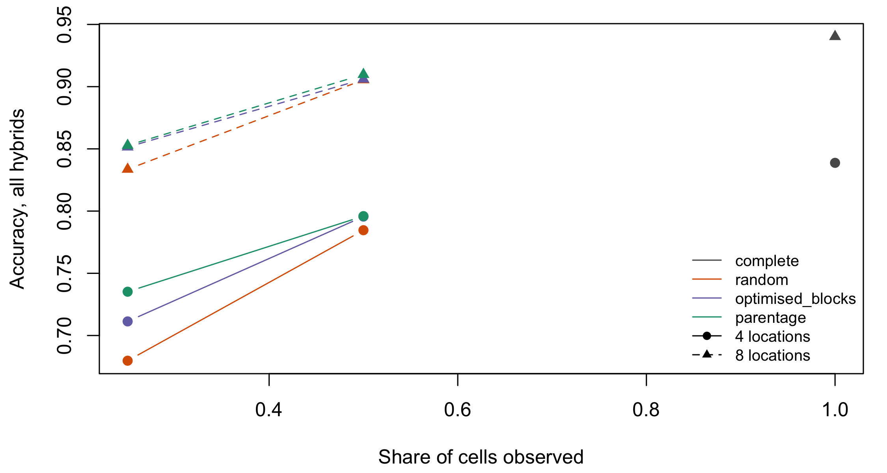
10.11.3.5 5. The BLUP is not dispersed; the SCA variance is not recoverable
med <- aggregate(cbind(relbias_s2f_mean, relbias_s2fl_mean, relbias_s2s_mean, relbias_h2_mean) ~ k, sc, median)
op <- par(mfrow = c(1, 2), mar = c(4.2, 4.2, 1, 1))
matplot(med$k, 100 * med[, -1], type = "b", pch = 19, lty = 1,
col = c("#1b9e77", "#7570b3", "#d95f02", "grey30"),
xlab = "Locations per hybrid, k", ylab = "Median relative bias (%)")
abline(h = 0, lty = 3)
legend("topright", bty = "n", cex = 0.8, pch = 19, col = c("#1b9e77", "#7570b3", "#d95f02", "grey30"),
legend = c("GCA (female)", "GCA x location", "SCA", "plot h2"))
plot(jitter(sc$k, 0.4), pmin(pmax(sc$bias_all_mean, 0.5), 1.5), pch = 19, cex = 0.6,
col = adjustcolor(ifelse(sc$frac_conv < 1, "#d95f02", "grey30"), 0.7),
xlab = "Locations per hybrid, k", ylab = "Dispersion slope b1", ylim = c(0.5, 1.5))
abline(h = 1, lty = 2)
legend("topright", bty = "n", cex = 0.8, pch = 19, col = c("grey30", "#d95f02"),
legend = c("all fits converged", "some fits did not"))
par(op)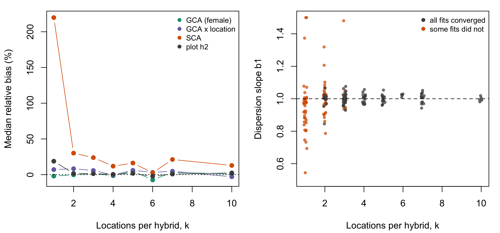
Prediction holds up. Where every REML fit converged, the dispersion slope stays within 0.845 to 1.076 across the grid. With \(k \ge 4\) it stays within 0.942 to 1.057. Sparsity costs accuracy but adds no dispersion bias, as long as the components are estimable. The GCA variance, the GCA x location variance and plot \(h^2\) have median biases near zero at every \(k\).
\(\sigma^2_{SCA}\) is the exception. Its median relative bias is +12 % at \(k = 4\), +30 % at \(k = 2\), and +220 % at \(k = 1\). Much of this is present in the complete design too (Table 10.5), so it is mainly a problem of identifying a small component, and sparsity makes it worse. A programme that needs a reliable SCA is in product development, not population improvement. It cannot fix the problem by adding coverage to a stage-1 trial.
The hidden cost is convergence. REML converged in 100.0 % of fits with four locations per hybrid, 97.0 % with three, 88.5 % with two, and only 42.6 % with one. That is 411 non-convergences in 2630 fits.
ImportantBox – Why REML does not converge when each hybrid sees one location
With \(k = 1\) each hybrid contributes a single plot in a single location. The data then carry no within-hybrid information to separate a hybrid’s GCA from its GCA x location deviation. The likelihood is flat along that ridge. The algorithm walks to the boundary of the parameter space and stops without meeting its criterion. The BLUPs from those fits are still usable. They come from solving the mixed-model equations at the current components, which is exactly what sparse_blup() does with known ones. The variance estimates are not usable, and should not be reported. Predicting well and estimating well are different achievements. At \(k = 1\) a trial can still do the first.
10.11.3.6 6. Two stages: test every candidate sparsely rather than a subset densely
The two-stage scenario works as follows:
- A pool of 400 candidate hybrids is available.
- Stage 1 tests \(N_1\) of them sparsely and keeps the top \(q\) by BLUP.
- Stage 2 tests the survivors densely in new locations.
- The final analysis is joint.
The metric is the realised gain: the mean true value of the ten hybrids finally chosen, in genetic standard deviations. Under 700 total plots, the gain is 1.358 when stage 1 tests 100 candidates, 1.778 for 200, and 2.148 for all 400. Across all budgets, efficiency relative to an oracle that selects on the truth rises from 0.585 to 0.935. The share of the true top 5 % captured rises from 19.8 % to 72.1 %.
a <- aggregate(cbind(gain_sd_units, gain_max_sd_units) ~ N1 + plots_total, ts, mean)
cl <- c("100" = "#d95f02", "200" = "#7570b3", "400" = "#1b9e77")
op <- par(mar = c(4.2, 4.2, 1, 1))
plot(NA, xlim = range(a$plots_total), ylim = c(0, max(a$gain_max_sd_units)), log = "x",
xlab = "Total plots (log scale)", ylab = "Realised gain (genetic SD)")
o <- aggregate(gain_max_sd_units ~ plots_total, a, mean); o <- o[order(o$plots_total), ]
lines(o$plots_total, o$gain_max_sd_units, col = "grey60", lwd = 3)
for (n in names(cl)) {
e <- a[a$N1 == as.numeric(n), ]; e <- e[order(e$plots_total), ]
lines(e$plots_total, e$gain_sd_units, type = "b", pch = 19, col = cl[n])
}
legend("bottomright", bty = "n", col = c(cl, "grey60"), lwd = c(1, 1, 1, 3), pch = c(19, 19, 19, NA),
legend = c(paste("N1 =", names(cl)), "oracle"), cex = 0.85)
par(op)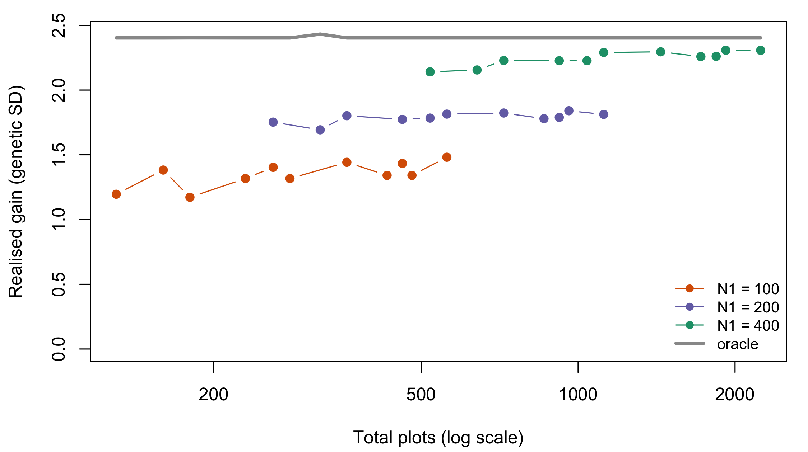
With a fixed budget, stage 1 should cover every candidate with few plots each, not a subset with many. The best combinations among the cached settings used four stage-1 locations at 50 % sparsity, eight stage-2 locations, and kept the top 10 to 20 %.
10.11.3.7 Limitations of the simulation
The simulation has six limitations.
- One plot per cell. \(\sigma^2_{SCA\times L}\) is confounded with plot error, and the residual estimates their sum. Within-location replication was not simulated.
- G x E is full-rank and symmetric in the fast layer, and rank one in the genomic layer. Neither layer has the factor-analytic structure of real trials or a crossover/non-crossover split (Burgueño et al. 2012; Werner, Covarrubias-Pazaran, et al. 2025).
- The pools are symmetric and unselected. There are no cycles of reciprocal recurrent selection, so the simulation says nothing about long-run pool trajectories (Chapter 21) or about unbalanced pools.
- Cost is counted in plots, not money. Opening a location costs more than adding plots to an existing one. The advice to spread plots assumes the marginal location is moderately priced (Section 9.7 has the cost structure).
- The grid is reduced. It has 15 replicates, no 200-hybrid level, and the high-SCA block run separately. The two-stage layer has 4 replicates and the genomic layer 8.
- Components are checked by mean bias only. No per-replicate confidence intervals were computed.
10.12 Practical recommendations by stage
Stage 1 (first agronomic testcross trial).
- Give priority to the number of candidates and the number of locations over replication. Keep the plots per hybrid fixed and widen the locations, up to about six (result 2).
- Use 3 to 5 testers in sparse testcrossing, with full-sibs spread across testers.
- Use low partial replication (p-rep of 0.1 to 0.2), with checks replicated in every block.
- When plots per hybrid fall to one or two, use a layout that puts both pools in every location (results 3 and 4).
- The estimation target is GCA. Do not expect a reliable SCA at this stage (result 5).
Stage 2 (pre-commercial hybrids).
- Test fewer candidates, and raise replication and environmental coverage.
- Keep a common core large enough to estimate the between-environment genetic correlations.
- The estimation target is now specific performance and stability, so SCA and G x E matter.
Decisions that span both stages.
- Genotype the parents, not the hybrids.
- Check connectivity before planting (Box 4).
- Match the between-environment covariance to the amount of data. Do not force an unstructured matrix on a very sparse design.
- Advance on GBLUP rather than BLUE when heritability is low to moderate and locations are few (Atanda et al. 2022; Endelman et al. 2014).
What not to do.
- Put everything in one location, however many candidates that allows. It gave the most variable gain in Werner, Covarrubias-Pazaran, et al. (2025), with replicates of negative gain.
- Use one tester at stage 1 when there is infrastructure for three.
- Transfer a sparsity percentage from another crop or programme without your own simulation.
- Fit a G x E term under extreme sparsity (Hild Aono and Chawade 2026).
The right sparse design changes from stage to stage because the parameter of interest changes: GCA in stage 1, specific performance and stability in stage 2.
TipBox 6 – A checklist for designing a sparse trial
- Define the TPE and the market segment.
- Estimate the genetic correlations between candidate locations from historical data.
- Fix the budget in plots.
- Choose the axis of sparsity: environments, testers, or both.
- Fix the number of testers.
- Fix the partial-replication rate.
- Choose the checks and how often they appear.
- Generate the allocation by restricted randomisation or a formal criterion. Where plots per hybrid are fewest, keep both pools in every location.
- Compute connectivity and the expected PEV before planting (Box 4).
- Simulate the design with the programme’s own parameters (
sparse_vc(),sparse_simulate(),sparse_blup()). - Fix the analysis model and the covariance structure a priori.
- Fix the decision metric and the cut-off a priori.
10.13 Limitations of the evidence, and perspectives
The authors of the primary studies declare their own limitations:
- Li et al. (2026): a narrow genetic base and a single year.
- Atanda et al. (2022): no way to identify the optimal overlap, and families of 1 to 9.
- Werner, Covarrubias-Pazaran, et al. (2025): no cost model, and no hybrid structure.
- Lubanga et al. (2025): a training set that was not optimised.
- González-Diéguez et al. (2026): no G x E, no epistasis, no diversity management, and the logistic cost ignored.
- Hild Aono and Chawade (2026): possible information leakage, and very similar environments.
As a research agenda, the open gaps are these.
- SCA estimation, and prediction of specific hybrids, under sparsity. This chapter’s simulation shows the variance component is not recoverable at stage
- The accuracy of specific unseen crosses is still unmeasured.
- A three-dimensional connectivity metric, female x male x location. It would join Section 9.2.3 to Box 4.
- The long-run effect on pool divergence and within-pool variance, in interaction with optimum contribution selection (Chapter 21; Chapter 17; Santantonio and Robbins (2020)).
- Phenomics-assisted sparse testing in maize hybrids.
- Pools unequal in size and breeding level, which is the usual commercial case.
- Cost-accuracy frontiers in money, including isolation blocks and hand pollination.
- The rate of wrongly discarded candidates as the evaluation metric, in place of the correlation.
- Prospective empirical validation. Almost all the evidence for sparse testing comes from resampling complete data or from simulation, not from trials designed sparse from the start (Alemu et al. 2024; Crossa et al. 2017).
Sparse testing changes the stage-1 question. It is no longer “which genotypes can I evaluate well?”. It becomes “which haplotypes can I evaluate well, and against what sample of the opposite pool?”. The evidence is sufficient to adopt sparse designs at stage 1 with confidence. It is not sufficient to prescribe a universal sparsity level. That decision remains specific to each programme, and should be sized by the programme’s own simulation.
10.14 Reproducibility and assumptions
regenerate.R sparse reruns the phenotypic core of the cached study with R/17_sparse_testing.R. The scale and calibration are the same: 20 x 20 hybrids, half-sib families of four, and 20 % of hybrids untested. There are two differences:
- the variance components are known, not estimated by REML;
- the parentage allocation’s exchange search minimises the number of disconnected location pairs before the harmonic concurrence. The cached study’s criterion returned \(-\infty\) for any disconnected start, which left its search no gradient.
cr <- subset(core, part %in% c("spread", "k1"))
cr$cached <- mapply(function(L, k, s, h) {
x <- s4$acc_all_mean[s4$nLoc == L & s4$k == k & s4$strategy == s & s4$h2_plot == h]
if (length(x)) x[1] else NA
}, cr$nLoc, cr$k, cr$strategy, cr$h2_plot)
cr$cached_se <- mapply(function(L, k, s, h) {
x <- s4$acc_all_se[s4$nLoc == L & s4$k == k & s4$strategy == s & s4$h2_plot == h]
if (length(x)) x[1] else NA
}, cr$nLoc, cr$k, cr$strategy, cr$h2_plot)
cr$z <- (cr$acc_all - cr$cached) / sqrt(cr$acc_all_se^2 + cr$cached_se^2)
cr <- cr[order(cr$h2_plot, cr$k, cr$nLoc, cr$strategy), ]
knitr::kable(fmt(cr[, c("h2_plot", "nLoc", "k", "strategy", "acc_all", "cached", "z", "b1")], 3),
row.names = FALSE,
col.names = c("Plot h2", "Locations", "k", "Strategy", "In-repo acc.", "Cached acc.",
"z", "In-repo b1"))
dk <- tapply(cr$acc_all - cr$cached, cr$k, mean, na.rm = TRUE)z is the difference in standard errors of the difference.
| Plot h2 | Locations | k | Strategy | In-repo acc. | Cached acc. | z | In-repo b1 |
|---|---|---|---|---|---|---|---|
| 0.2 | 4 | 1 | parentage | 0.711 | 0.692 | 0.690 | 0.957 |
| 0.2 | 4 | 1 | random | 0.726 | 0.702 | 1.075 | 0.962 |
| 0.2 | 6 | 1 | parentage | 0.760 | 0.720 | 1.911 | 1.031 |
| 0.2 | 6 | 1 | random | 0.728 | 0.727 | 0.036 | 0.976 |
| 0.2 | 10 | 1 | parentage | 0.749 | NA | NA | 0.953 |
| 0.2 | 10 | 1 | random | 0.742 | NA | NA | 0.990 |
| 0.2 | 2 | 2 | complete | 0.773 | 0.733 | 1.741 | 1.019 |
| 0.2 | 4 | 2 | parentage | 0.814 | 0.781 | 1.821 | 1.015 |
| 0.2 | 4 | 2 | random | 0.822 | 0.762 | 4.064 | 1.009 |
| 0.2 | 6 | 2 | parentage | 0.816 | 0.811 | 0.297 | 0.999 |
| 0.2 | 6 | 2 | random | 0.807 | 0.816 | -0.592 | 1.006 |
| 0.2 | 10 | 2 | parentage | 0.823 | 0.820 | 0.221 | 0.982 |
| 0.2 | 10 | 2 | random | 0.810 | 0.819 | -0.473 | 1.004 |
| 0.4 | 4 | 1 | parentage | 0.845 | 0.808 | 2.189 | 1.032 |
| 0.4 | 4 | 1 | random | 0.830 | 0.817 | 0.603 | 0.999 |
| 0.4 | 6 | 1 | parentage | 0.841 | 0.844 | -0.256 | 0.976 |
| 0.4 | 6 | 1 | random | 0.845 | 0.836 | 0.627 | 0.994 |
| 0.4 | 10 | 1 | parentage | 0.858 | NA | NA | 1.023 |
| 0.4 | 10 | 1 | random | 0.865 | NA | NA | 0.986 |
| 0.4 | 2 | 2 | complete | 0.818 | 0.831 | -1.229 | 1.003 |
| 0.4 | 4 | 2 | parentage | 0.870 | 0.862 | 0.744 | 1.027 |
| 0.4 | 4 | 2 | random | 0.872 | 0.860 | 0.959 | 1.014 |
| 0.4 | 6 | 2 | parentage | 0.866 | 0.887 | -1.997 | 1.005 |
| 0.4 | 6 | 2 | random | 0.864 | 0.883 | -1.827 | 0.990 |
| 0.4 | 10 | 2 | parentage | 0.891 | 0.897 | -0.801 | 1.021 |
| 0.4 | 10 | 2 | random | 0.887 | 0.892 | -0.558 | 0.999 |
At \(k = 2\) the two sources agree within sampling error. The mean difference is +0.006, and the gain from spreading the same plots over more locations reproduces. At \(k = 1\) the known-component values are higher by +0.017 on average. That is the cost of estimating the components where REML mostly fails to converge (result 5). The in-repo dispersion slopes all sit near 1. The in-repo sweep does not resolve the parentage-versus-random difference at \(k = 1\): its 30 unpaired replicates per cell have standard errors near 0.01, the same size as the effect. The paired contrast of Table 10.7, on 385 pairs, is the evidence for result 3.
The live functions are verified in tests/testthat/test-sparse.R:
sparse_blup()equals the literal GLS form ofref_sparse_blup()to \(10^{-8}\), including untested hybrids, and so do its PEVs.- Every allocation puts each hybrid in exactly \(k\) locations.
- The parentage design covers both pools in every location.
- The dispersion slope of the known-component BLUP averages 1.
The cached numbers carry the assumptions listed in the limitations of the simulation (Section 10.11.3). Treat them as reproducible findings of that configuration, not as constants.
10.15 Where this connects
- Chapter 9 chose which crosses to make. This chapter chose where to plant them. The joint problem, sparse in crosses and in environments at once, is Section 9.9’s second gap.
- The GCA/SCA decomposition and the tester-frequency argument behind Box 5 are derived in Section 12.10.
- The relationship matrices that make sparse designs analysable are those of
- The staged-trial trade-off of Chapter 8 is the line-breeding version of result 6.
- Spreading testers and parents to slow within-pool erosion is the same concern as Chapter 17 and Chapter 21. Sparse testcrossing does by design what a diversity constraint does by optimisation.